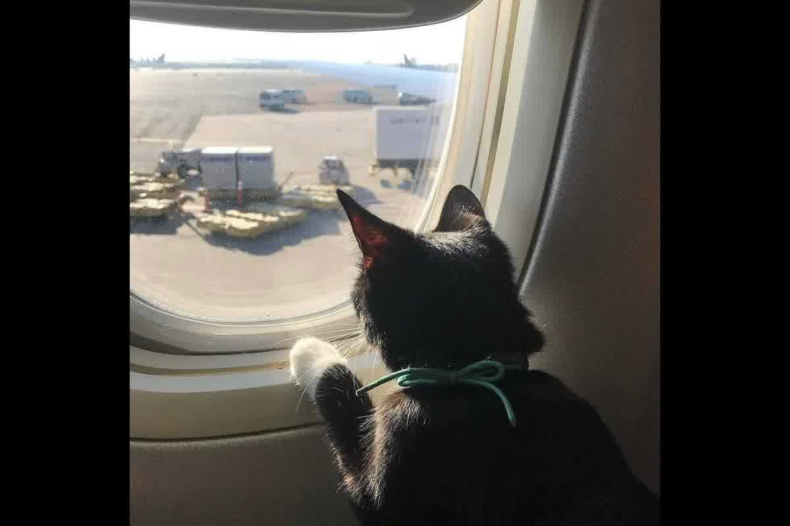
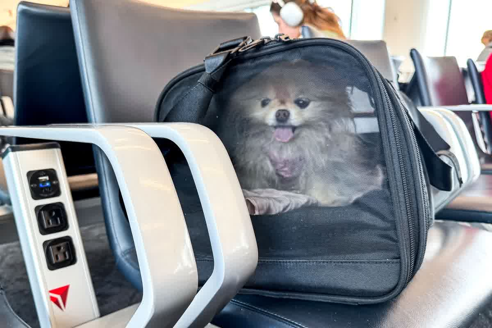

Análisis clínico de la Dra. Jessica Camacho sobre las señales de estrés en tu mascota durante el viaje y protocolos de intervención técnica para vuelos internacionales.

El colapso del sistema neuroendocrino en un animal confinado no se manifiesta únicamente a través de llantos o intentos de escape, sino mediante alteraciones metabólicas silenciosas que comprometen su supervivencia. Reconocer las señales de estrés en tu mascota durante el viaje y qué hacer ante ellas separa un arribo exitoso de una emergencia clínica en el aeropuerto de destino. En Trujillo, atendemos pacientes que llegan con cuadros de deshidratación severa porque sus dueños no supieron interpretar que el jadeo persistente no era calor, sino una tormenta de cortisol.
La exposición a ruidos de turbinas, vibraciones y cambios de presión atmosférica dispara la liberación inmediata de catecolaminas y glucocorticoides desde las glándulas adrenales hacia el torrente sanguíneo. Esta respuesta, mediada por el eje hipotálamo-pituitario-adrenal (HPA), provoca un aumento de la frecuencia cardíaca, hipertensión y una redistribución del flujo sanguíneo que abandona el sistema digestivo para priorizar los músculos. Si la mascota presenta midriasis (pupilas dilatadas), hipersalivación o temblores musculares finos, el organismo ya ha superado su capacidad de compensación inicial y ha entrado en una fase de distrés agudo.
La desincronización de los ritmos biológicos debilita la barrera intestinal, permitiendo que bacterias oportunistas atraviesen la mucosa y generen una respuesta inflamatoria sistémica antes de aterrizar. Los mecanismos moleculares de esta vulnerabilidad se detallan en nuestro estudio sobre El eje intestino–cerebro en perros y gatos durante transporte internacional: integración neuroendocrina, microbiota y metabolismo energético. Un perro que bosteza repetidamente o que presenta "ojos de ballena" (donde se ve la esclerótica blanca) está comunicando un nivel de ansiedad que precede al agotamiento metabólico total.

Los felinos manejan el estrés mediante la inhibición conductual, lo que suele confundirse con un estado de tranquilidad cuando en realidad es una inmovilidad tónica inducida por el pánico. Un gato que viaja en silencio pero mantiene la respiración superficial y rápida, o que presenta las almohadillas plantares sudorosas, está sufriendo un impacto neurovegetativo severo. La lipidosis hepática felina es la consecuencia más grave de este estado; un gato que se niega a comer por más de 24 horas debido al miedo inicia una movilización masiva de grasas hacia el hígado que puede ser letal.
El marcaje facial y el uso de feromonas sintéticas ayudan a reducir la reactividad del sistema nervioso central, pero no reemplazan el condicionamiento previo al transportador. Lo que la gente no anticipa es que un gato que se lame excesivamente (acicalamiento por estrés) o que se esconde al fondo de la transportadora está intentando regular una temperatura interna que sube peligrosamente debido a la ansiedad. Intervenir en este punto requiere estabilización térmica y evitar manipulaciones innecesarias que aumenten la percepción de amenaza en el entorno del terminal aéreo.
La hidratación técnica es la herramienta de defensa más poderosa frente a la viscosidad sanguínea que provoca la liberación constante de adrenalina. Proporcionar agua fresca a través de bebederos de goteo permite que la mascota mantenga sus mucosas húmedas sin el riesgo de derrames que mojen su pelaje y causen hipotermia por evaporación en la cabina. Si detecta que su perro está jadeando de forma estridulosa, es necesario aplicar paños frescos en las zonas de poco pelo, como la región inguinal, para forzar el descenso de la temperatura interna antes de que ocurra una denegación de embarque por sospecha de golpe de calor.
La administración de suplementos nutricionales que contengan L-teanina o alfa-casozepina, iniciada al menos siete días antes de la exportación, ayuda a modular los receptores GABA sin causar la peligrosa sedación que prohíben las aerolíneas. Estas sustancias permiten que el animal procese los estímulos externos sin entrar en un ciclo de pánico que derive en autolesiones dentro de la jaula. Al detectar señales de estrés en tu mascota durante el viaje y qué hacer, la prioridad debe ser la reducción de estímulos visuales cubriendo parcialmente el transportador con una manta que conserve la ventilación pero elimine el movimiento caótico del aeropuerto.
La aclimatación al transportador es un proceso que toma, en promedio, ocho semanas de entrenamiento positivo para que el animal lo identifique como una zona de seguridad biológica. Introducir a una mascota en una transportadora nueva el mismo día del vuelo garantiza una respuesta de estrés incontrolable que disparará los niveles de glucosa y lactato en sangre. En nuestra clínica en Perú, evaluamos la frecuencia cardíaca basal del paciente dentro de su caja de viaje para emitir un certificado de salud con un criterio de aptitud real y no puramente administrativo.
Cadena Documental
El certificado de salud es un registro final de la aptitud y estabilidad neuroendocrina evaluada en consulta. Un expediente mal estructurado puede deshacer semanas de preparación clínica. Consulta nuestro análisis sobre la arquitectura de un expediente de exportación inexpugnable.
El examen clínico previo a la exportación debe incluir una revisión dental y de almohadillas, ya que el estrés crónico exacerba cualquier foco inflamatorio preexistente. SENASA exige que el animal esté libre de ectoparásitos y en buen estado general, pero un profesional debe ir más allá y verificar la estabilidad del sistema cardiovascular ante el esfuerzo. Un perro con soplos cardíacos subclínicos claudicará mucho antes ante la hipoxia leve del vuelo si el estrés del embarque ha agotado previamente su reserva de oxígeno miocárdico.
La desparasitación interna debe realizarse con fármacos que no tengan efectos secundarios eméticos, ya que un episodio de vómito en el transportador aumenta el riesgo de neumonía por aspiración. La elección del principio activo debe alinearse con los plazos regulatorios del país de destino, como el tratamiento contra Echinococcus multilocularis exigido por el Reino Unido o Noruega entre 24 y 120 horas antes de la entrada. Un error en esta ventana temporal no solo genera un problema documental, sino que obliga a repetir manipulaciones veterinarias que estresan al animal justo antes de su vuelo más largo.
Una evaluación del estado fisiológico permite al veterinario diseñar un plan de viaje y minimizar el estrés de su mascota. Zoovet Travel audita la estabilidad neuroendocrina de sus pacientes en Trujillo para mitigar las señales de estrés durante el viaje y orientar su prevención.